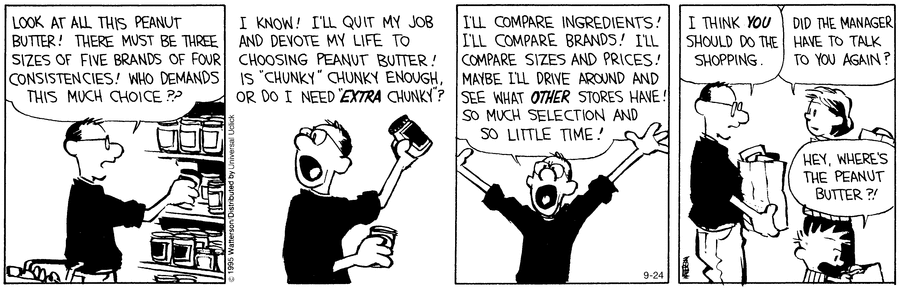

1 Probability
When we are uncertain about an outcome’s occurrence (e.g., whether a coin will come up heads or tails, the number of dots observed on the roll of a die, whether or not the bus will be late), we typically quantify this uncertainty with a probability. Probability is the foundation upon which all of statistics is built, and it a provides a framework for modeling populations, experiments, and almost anything that could be considered a random phenomenon.
1.1 Basic Probability Definitions and Calculations
A sample space, denoted by \(\cal{S}\), is comprised of all possible outcomes of a random phenomenon.
An event is a collection of possible outcomes. Each event \(A\) is a subset of \(\cal{S}\).
We want to formalize the idea of the “chance” that event \(A\) occurs. We will do this by defining the probability of each \(A\), which we denote \(P(A)\).
Probabilities are calculated by defining functions on sets, and should be defined for all possible events. One thing that must be true: \[ 0 \leq P(A) \leq 1 \]
More formally, a probability function is defined as follows.
Given a sample space \(\cal{S}\), a probability function is a function P(\(\cdot\)) that satisfies
Requirements (1) - (3) are called the
Any function P(\(\cdot\)) that satisfies the Axioms of Probability is called a probability function.
Here’s a (hopefully) obvious theorem:
Theorem: Let \((\cal{S}, \hbox{P})\) be a sample space and associated probability function, respectively. For any event \(A \in \cal{S}\)
And another, maybe less obvious.
Theorem: Let \((\cal{S}, \hbox{P})\) be a sample space and associated probability function, respectively. For any events \(A\), \(B \in \cal{S}\)
We’ll use these theorems often when calculating probabilities. However, we first need to figure out how to assign probabilities to specific events. In some cases, we can do that by figuring out how many possible events there are in a sample space.
In a finite sample space, when all outcomes are equally likely, the number of possible outcomes can be used to make probability assignments.
- If the sample space \(\cal{S}\) consists of \(n\) possible outcomes, and these \(n\) outcomes are equally likely, the probability of any of these \(\{s_1,s_2,\dots, s_n\}\) outcomes is
- If the set \(A\) is some collection of these outcomes, then
Example: Toss a fair, six-sided die
Other Examples:
Often, it is difficult to list all of the outcomes in a sample space, even when it is finite. In such circumstances, other methods must be employed to count the number of outcomes in a sample space.
Example:

Why is the number of possible outcomes important? Because when each outcome is equally likely, we use the number of possible outcomes to find the probabilities of various events. The problem is that Fundamental Theorem of Counting doesn’t always (obviously) work. To determine the number of ways a task can be completed, we often need to consider whether sampling occurs with or without replacement and whether sampling is ordered or unordered. We’re not going to go into a ton of detail here. Some of these combinatorics scenarios really aren’t helpful to us, and most situations don’t involve outcomes that are all equally likely.
Some quick and dirty examples:
Ordered, with replacement: Number of different 6-character license plates if the first 3 characters must be letters and the final 3 characters must be numbers.
In general:
Ordered, without replacement: Number of different lead-off (i.e., first three batters) batting orders for a baseball team consisting of 9 players.
In general:
Unordered, without replacement: A student is to answer 7 out of 10 questions on an exam. How many choice are there?
In general:
Unordered, with replacement: This one is not terribly intuitive, and not terribly useful anyway. I couldn’t think of a realistic scenario. In case you care:
Example: Suppose Alabama (which does not have a state lottery) is considering four possible lottery drawing configurations:
- Six different cages, each with 40 balls numbered 1-40. Winners’ selections must be in the same sequence as the numbers drawn from the cages.
- One cage with 40 balls numbered 1-40. Winners’ selections must be in the same sequence as the six numbers drawn from the cage.
- One cage with 40 balls numbered 1-40 Winners’ selections must match the six numbers drawn from the cage.
- Six different cages, each with 40 balls numbered 1-40. Winners’ selections must match the numbers drawn from the cages.
Bottom line: the total number of ways to pick \(r\) items from a total of \(n\) distinguishable items depends on whether or not order matters, as well as whether sampling is done with or without replacement.
| Without Replacement | With Replacement | |
|---|---|---|
| Order Matters | ||
| Order Doesn’t Matter | ||
Unordered, without replacement will turn out to be the most case we use most often (and we’ll use that one A LOT).
1.2 Conditional Probability
Let’s look at the following table:
| Survived | Did Not Survive | |
|---|---|---|
| First Class | 201 | 123 |
| Second Class | 118 | 166 |
| Third Class | 181 | 528 |
The counts in the table are the number of Titanic passengers that fell into the each of the categories. From this table, we can calculate some probabilities. Let’s consider the outcomes First Class and Survived.
Often, we have partial information about a certain phenomenon and wish to know how this affects the probabilities of outcomes of interest to us, if at all. For example, we might want to know the probability a randomly selected student is a sophomore, given that we know they are enrolled in STAT 262.
Example: Toss a fair die. Let \(A=\{1\}\) and \(B=\{1,3,5\}\). What is the probability of throwing a 1 given that an odd number is thrown?
Example, again:
This definition of conditional probability leads to:
If \(A_1,A_2,\dots\) is a collection of mutually exclusive (\(A_i \cap A_j = \emptyset\) for all \(i \neq j\)) and exhaustive
(\(P(\cup_{i=1}^{\infty} A_i)=1\)) events, and if \(P(A_i) > 0\) for all \(i\), then for any event \(B\),
\(P(B)=\)
Venn Diagram:
Suppose \(A_1,A_2,\dots,\) partition \(\cal{S}\).
\(P(A_i|B) =\)
Example: Of travelers arriving at a small airport, 60% fly on major airlines, 30% fly on privately owned planes, and the remainder fly on commercially owned planes not belonging to a major airline. Of those traveling on major airlines, 50% are traveling for business reasons, whereas 60% of those arriving on private planes and 90% of those arriving on other commercially owned planes are traveling for business reasons.
Let’s first construct a table.
Suppose we randomly select one person arriving at this airport. What is the probability the person . . .
- is traveling on business?
- is traveling for business on a privately owned plane?
- arrived on a privately owned plane, given the person is traveling on business?
- is traveling on business, given the person is flying on a commercially owned plane not belonging to a major airline?
Example: A diagnostic test for a disease is such that it (correctly) detects the disease in 95% of the individuals who actually have the disease. Also, if a person does not have the disease, the test will report that he or she does not have it with probability 0.9. Only 1% of the population has the disease in question. If a person is chosen at random from the population and the diagnostic test indicates that she has the disease, what is the conditional probability that she does, in fact, have the disease?
Example: A student answers a multiple choice exam question that offers four possible answers. Suppose the probability the student knows the answer to the question is 0.8 and the probability the student will guess is 0.2. If the student guesses, the probability of selecting the correct answer is 0.25. If the student correctly answers a question, what is the probability the student really knew the correct answer?
Consider the following table:
| Late | On Time | |
|---|---|---|
| Domestic | 12 | 109 |
| International | 6 | 53 |
Find the probability that a randomly selected flight on this day was on time.
Find the probability that a randomly selected flight was on time, given that it was a domestic flight.
What do you notice about these two values?
Does this make sense in the context of this scenario? What do you think it means?
1.3 Independence
Sometimes the occurrence of one event, \(B\), will have no effect on the probability of another event, \(A\). If \(A\) and \(B\) are unrelated, then intuitively it should be the case that
Also, it follows that
Two events, \(A\) and \(B\) are statistically independent if and only if
Extending this to multiple events . . .
A collection of events \(A_1, A_2, \dots A_n\) are if and only if for any subcollection \(A_{i_1},A_{i_2},\dots, A_{i_k}\)
Example: A mouse caught in a maze has to maneuver through three successive escape hatches in order to escape. If the hatches operate independently and the probabilities for the mouse to successfully get through them are 0.6, 0.4, and 0.2, respectively, what are the probabilities that the mouse:
- will be able to escape?
- will not be able to escape?